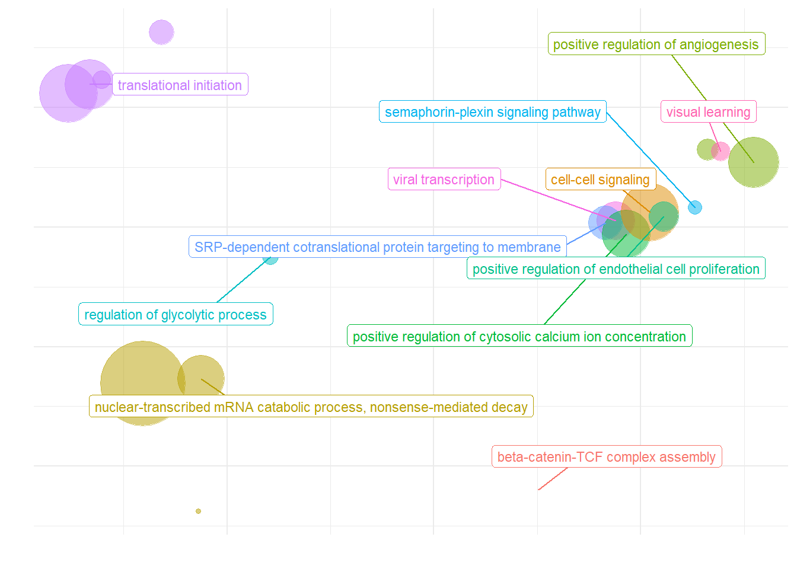

Checks and PCA
For manuscript: Neurogenomic landscape of male cooperative behavior in a wild bird
Last Substantive change December 2023
Last Knit “2023-12-08”
Here, I take the filtered dataset from the QC process, and run a whole brain analysis, as well as individual tissue analysis in the next markdown. Here, I also explore the relationships between our explanatory variables.
key<- read.csv("../data_filtered/data_key_Parsed_ReplicatesRemoved.csv")
behav<- read.csv("../data_unfiltered/PIPFIL_T_and_behav_data.csv")
rownames(key)<- key$X
key$Color_ID<- sub("/","", key$Color_ID)
key<- plyr::rename(key, replace=c("Color_ID"="colorID"))
behav$status<- plyr::revalue(behav$status, c("floa"="floater", "terr"="territorial"))
key_behav<- merge(key, behav, by="colorID")
key_behav<- key_behav[!is.na(key_behav$last_behav),]
#create a data.frame with all of the observations.
not_in_behav<- key[!key$X %in% key_behav$X,]
cols_not_key<- colnames(key_behav)[!colnames(key_behav) %in% colnames(key)]
cols_not_key_df<- data.frame(matrix(NA, nrow = nrow(not_in_behav), ncol = length(cols_not_key)))
colnames(cols_not_key_df)<- cols_not_key
not_in_behav<- cbind(not_in_behav, cols_not_key_df)
key_behav<- rbind(key_behav, not_in_behav)
rownames(key_behav)<- key_behav$X
key_behav$Tissue<- factor(key_behav$Tissue, levels=c("GON","PIT","VMH","AH","PVN","POM","ICO","GCT","AI","TNA","LS", "BSTm"))
key_behav<- key_behav[order(rownames(key_behav)),]
key_behav$Class<- as.factor(key_behav$Class)
key_behav$Class<- revalue(key_behav$Class, replace=c("SCB floater"="Predefinitive floater", "DCB floater "="Definitive floater", "DCB territorial"="Territorial"))
key_behav$Class<- factor(key_behav$Class, levels=c("Predefinitive floater", "Definitive floater", "Territorial"))
rownames(key_behav)<- key_behav$sampleID
key_behav<- key_behav[order(key_behav$sampleID),]
key_behav$Year<- as.factor(key_behav$Year)
key_behav$Batch<- as.factor(key_behav$Batch)
key_behav$Status<- as.factor(key_behav$Status)
key_behav_unique<- key_behav[!duplicated(key_behav$colorID),]
#read the raw count data
data<- read.csv("../data_filtered/data_RawCounts_all_ReplicatesRemoved_antisense_V2.csv")
rownames(data)<- data$X
data$X<- NULL
### Gene Ontology
go_key<- read.csv("../GO_annotations/Maggies_annotations_modifiedR.csv")
go_key<- plyr::rename(go_key, replace=c("GeneID"="gene"))
go_terms<- read.csv("../GO_annotations/pfil_GO_key_raw.csv")
go_terms<- plyr::rename(go_terms, replace=c("GeneID"="gene"))
go2gene_bp<- go_terms[which(go_terms$Aspect=="P"),c("GO_ID", "gene")]
go2gene_mf<- go_terms[which(go_terms$Aspect=="F"),c("GO_ID", "gene")]
go_obo<- read.csv("../GO_annotations/ontology_obo_out.csv")
go_obo<- plyr::rename(go_obo, replace=c("id"="GO_ID"))
go2name_bp<- go_obo[which(go_obo$namespace=="biological_process"),c("GO_ID", "name")]
go2name_mf<- go_obo[which(go_obo$namespace=="molecular_function"),c("GO_ID", "name")]
genes_key<- read.csv("../GO_annotations/Maggies_annotations_modifiedR.csv")
genes_key<- plyr::rename(genes_key, replace=c("GeneID"="gene"))
genes_key$gene[genes_key$gene=="LOC113993669"] <- "CYP19A1"
genes_key$gene[genes_key$gene=="LOC113983511"] <- "OXT"
genes_key$gene[genes_key$gene=="LOC113983498"] <- "AVP"
genes_key$gene[genes_key$gene=="LOC113982601"] <- "AVPR2"
data_genes<- data.frame(gene=rownames(data))
genes_key<- merge(data_genes, genes_key, by="gene", all.x=TRUE)
#genes_key<- genes_key[which(grepl("LOC[0-9]+",genes_key$gene)),]
genes_key$display_gene_ID<- ifelse(grepl("LOC[0-9]+", genes_key$gene) & !grepl("LOC[0-9]+",genes_key$best_anno) & !is.na(genes_key$best_anno), paste0(genes_key$gene," (",genes_key$best_anno,")"), as.character(genes_key$gene))
genes_key<- genes_key[,c("gene","best_anno","display_gene_ID")]1 Exploration of the behavioural data
We were concerned about the signal from the last few days outweighing the gene-expression signal from their overall phenotype, so we will explore how different these measures are from eachother.

1.1 Associations between variables
Given the significant relationship between degree and strength, I will only keep one of these variables - the strength. This was the most repeatable of the two sociality variables in Ryder et al. (2020).

All significance tests cited in the figure above are based on just territorial and floater, but colour-coded according to plumage*status.

1.2 Nuisance variables
In the previous QC exploration I found substantial DEGs according to collection Year and Sequencing Batch. Here we explore how the continuous variables are distributed across sampling years. The tests find there is a difference in the medians between years for both our interest traits.

2 All tissues PCA
Plotting all the tissues
all_data<- data
start<- nrow(all_data)
#remove genes with avg read counts <20
all_data$avg_count<- apply(all_data, 1, mean)
all_data<- all_data[all_data$avg_count>20,]
all_data$avg_count<-NULL
#remove genes where >50% of samples have 0 gene expression
all_data$percent_0<- apply(all_data, 1, function(x)length(x[x==0]))
thresh<- ncol(all_data)/2
all_data<- all_data[all_data$percent_0<=thresh,]
all_data$percent_0<-NULL
nrow(all_data)FALSE [1] 14414
FALSE [1] "Batch"
FALSE [1] "Tissue"
FALSE [1] "Status"
FALSE [1] "Year"
Based on these results it seems like PC7 is associated with social Status. Let’s explore this PC further.
#library(nlme)
test<- data.frame(PC7=p$rotated$PC7)
test<- cbind(test, key_behav)
#summary(lm(PC5 ~ Year + Tissue*Status,data=test ))
#m1<- lme(PC7 ~ Year + Tissue*Status, random=~1|Harvest_ID, data=test)
m1<- lm(PC7 ~ Year + Tissue* Status, data=test,contrasts=list(Tissue=contr.sum, Status=contr.sum))
pc7test<- Anova(m1, type=3)
summary(m1)FALSE
FALSE Call:
FALSE lm(formula = PC7 ~ Year + Tissue * Status, data = test, contrasts = list(Tissue = contr.sum,
FALSE Status = contr.sum))
FALSE
FALSE Residuals:
FALSE Min 1Q Median 3Q Max
FALSE -33.171 -3.517 0.078 3.637 13.117
FALSE
FALSE Coefficients:
FALSE Estimate Std. Error t value Pr(>|t|)
FALSE (Intercept) -8.0891 1.1692 -6.918 1.36e-10 ***
FALSE Year2017 9.8424 1.3504 7.288 1.86e-11 ***
FALSE Year2018 8.6339 1.4169 6.093 9.47e-09 ***
FALSE Tissue1 1.0550 1.4854 0.710 0.478694
FALSE Tissue2 0.4278 1.7107 0.250 0.802901
FALSE Tissue3 4.8143 1.4854 3.241 0.001477 **
FALSE Tissue4 -6.5077 1.8210 -3.574 0.000478 ***
FALSE Tissue5 -5.0008 1.7107 -2.923 0.004021 **
FALSE Tissue6 -0.7300 1.4854 -0.491 0.623830
FALSE Tissue7 4.6170 1.6259 2.840 0.005165 **
FALSE Tissue8 -4.5599 1.6232 -2.809 0.005652 **
FALSE Tissue9 11.8030 1.5790 7.475 6.73e-12 ***
FALSE Tissue10 -11.4010 1.4854 -7.675 2.23e-12 ***
FALSE Tissue11 2.8012 1.5425 1.816 0.071438 .
FALSE Status1 -1.3485 0.4789 -2.816 0.005548 **
FALSE Tissue1:Status1 2.7386 1.4811 1.849 0.066497 .
FALSE Tissue2:Status1 0.9568 1.6978 0.564 0.573933
FALSE Tissue3:Status1 -0.5732 1.4811 -0.387 0.699333
FALSE Tissue4:Status1 -2.7275 1.8088 -1.508 0.133763
FALSE Tissue5:Status1 0.9737 1.6978 0.573 0.567198
FALSE Tissue6:Status1 0.4703 1.4811 0.318 0.751277
FALSE Tissue7:Status1 -1.3411 1.6255 -0.825 0.410711
FALSE Tissue8:Status1 -1.3142 1.6214 -0.810 0.418987
FALSE Tissue9:Status1 -0.5656 1.5801 -0.358 0.720914
FALSE Tissue10:Status1 -1.1510 1.4811 -0.777 0.438378
FALSE Tissue11:Status1 2.6198 1.5436 1.697 0.091796 .
FALSE ---
FALSE Signif. codes: 0 '***' 0.001 '**' 0.01 '*' 0.05 '.' 0.1 ' ' 1
FALSE
FALSE Residual standard error: 6.095 on 145 degrees of freedom
FALSE Multiple R-squared: 0.6072, Adjusted R-squared: 0.5395
FALSE F-statistic: 8.966 on 25 and 145 DF, p-value: < 2.2e-16#pc5test<- summary(aov(test$PC5 ~ test$Year + test$Status))
pc5test_anova <- ggtexttable(signif(pc7test,2),theme = ttheme(base_size = 6,padding=unit(c(4,10),"pt")),rows=rownames(pc7test)) %>% tab_add_title(text = "PC5 ~ Year + Tissue * Status, Type III ANOVA", size=6, padding = unit(0.1, "line"))
e<-biplot(p, x="PC1",y="PC7", lab=NULL, colby="Tissue", shape="Status", legendPosition="right", title="") + peri_theme
f<-ggplot(test, aes(x=Tissue, y=PC7, colour=Status)) + geom_boxplot(outlier.colour = NA) + geom_point(position=dodge) + peri_theme + theme(legend.position="none") + scale_colour_manual(values=status_cols[2:3]) + theme(axis.text.x=element_text(angle=90))
g<- ggarrange(ggarrange(f,pc5test_anova, ncol=2, labels=c("A","B")),c, ncol=1, nrow=2,labels=c("","C"))
g
ggsave(filename="../DE_results/figure_alltissues_PC7.pdf",plot=g, device="pdf",height =6 ,width=7.5, units="in",bg="white")
ggsave(filename="../DE_results/figure_alltissues_PC7.png", plot=g,device="png",height =6 ,width=7.5, units="in", bg="white")Let’s see what genes are associated with each principal component. See GitHub repository for larger version.
loadings<- p$loadings
loadings$gene<- rownames(loadings)
loadings<- merge(loadings, genes_key, by="gene")
plots<- list()
pcs<- paste0("PC",1:10)
for(i in pcs){
#i="PC2"
sub<- loadings[,c(i, "display_gene_ID","gene")]
sub<- sub[order(sub[,i]),]
top30<- rbind(head(sub,15), tail(sub,15))
top30$best_anno2<- factor(top30$display_gene_ID, levels=unique(top30$display_gene_ID[order(top30[,i],top30$display_gene_ID)]), ordered=TRUE)
top30$pos<- ifelse(top30[,i]<0, "neg", "pos")
plots[[i]]<-ggplot(top30, aes(x=best_anno2, y=top30[,i], fill=pos)) + geom_bar(stat="identity")+ peri_theme + coord_flip() + labs(x="gene", y=paste(i,"loading")) + scale_fill_manual(values=c("#0D8CFF","#FF3300")) + theme(legend.position="none")
}
ggarrange(plotlist=plots, ncol=5, nrow=2)
ggsave(filename="../DE_results/figure_alltissue_loadings.pdf", device="pdf",height =8.5 ,width=16, units="in", bg="white")
ggsave(filename="../DE_results/figure_alltissue_loadings.png", device="png",height =8.5 ,width=16, units="in", bg="white")2.1 PC7 Gene Ontology
What are the gene ontology categories enriched in PC7?
res_go<- loadings[c("gene","PC7","best_anno")]
#res_go$logP<- -log(abs(res_go$PC5), 10)
#res_go$logP<- ifelse(res_go$PC5<0, -(res_go$logP), res_go$logP)
res_go<- res_go[order(res_go$PC7, decreasing=TRUE),]
geneList<- res_go$PC7
names(geneList)<- res_go$gene
y<- GSEA(geneList, TERM2GENE = go2gene_bp, TERM2NAME = go2name_bp)
ridgeplot(y,fill="pvalue", showCategory=20) + scale_fill_viridis(direction=-1) + peri_theme

3 Wholebrain PCA
outliers=c("PFT2_POM_run1")
brain_behav<- subset(key_behav, Tissue!="GON")
brain_behav<- subset(brain_behav, Tissue!="PIT")
brain_behav<- brain_behav[!rownames(brain_behav) %in% outliers,]
brain_behav<- droplevels(brain_behav)
brain_data<- data[,colnames(data) %in% rownames(brain_behav)]
start<- nrow(brain_data)
#remove genes with avg read counts <20
brain_data$avg_count<- apply(brain_data, 1, mean)
brain_data<- brain_data[brain_data$avg_count>20,]
brain_data$avg_count<-NULL
#remove genes where >50% of samples have 0 gene expression
brain_data$percent_0<- apply(brain_data, 1, function(x)length(x[x==0]))
thresh<- ncol(brain_data)/2
brain_data<- brain_data[brain_data$percent_0<=thresh,]
brain_data$percent_0<-NULL
#13652 genes.Looking for cohesive signatures across the whole brain. Overall, before this round of filtering for the brain dataset we have 16854 genes. After filtering we have 13653 genes. This final document is the result of lots of work in single tissues to determine outlier status that were identified in the QC process. We are excluding PFT2_POM_run1 because the analyses below indicated that it was an outlier within POM, other potentials identified in the QC process were not deemed outliers.
FALSE [1] "Batch"
FALSE [1] "Harvest_ID"
FALSE [1] "Tissue"
FALSE [1] "Status"
FALSE [1] "Year"
PC5 seems to be associated with our interest variables.
FALSE
FALSE Call:
FALSE lm(formula = PC5 ~ Year + Tissue * Status, data = test, contrasts = list(Tissue = contr.sum,
FALSE Status = contr.sum))
FALSE
FALSE Residuals:
FALSE Min 1Q Median 3Q Max
FALSE -13.870 -3.921 0.333 3.443 13.186
FALSE
FALSE Coefficients:
FALSE Estimate Std. Error t value Pr(>|t|)
FALSE (Intercept) -11.08566 1.18819 -9.330 6.79e-16 ***
FALSE Year2017 12.92120 1.38572 9.325 6.99e-16 ***
FALSE Year2018 12.49391 1.45234 8.603 3.53e-14 ***
FALSE Tissue1 5.89343 1.40208 4.203 5.09e-05 ***
FALSE Tissue2 -11.70783 1.71550 -6.825 3.83e-10 ***
FALSE Tissue3 -1.66098 1.61391 -1.029 0.30547
FALSE Tissue4 2.04434 1.43660 1.423 0.15732
FALSE Tissue5 3.79196 1.53182 2.475 0.01470 *
FALSE Tissue6 -2.78226 1.53061 -1.818 0.07160 .
FALSE Tissue7 6.15603 1.48814 4.137 6.57e-05 ***
FALSE Tissue8 -4.05509 1.40208 -2.892 0.00454 **
FALSE Tissue9 4.08572 1.45458 2.809 0.00581 **
FALSE Status1 -2.02400 0.49963 -4.051 9.08e-05 ***
FALSE Tissue1:Status1 -0.35006 1.39826 -0.250 0.80274
FALSE Tissue2:Status1 -3.00894 1.70070 -1.769 0.07939 .
FALSE Tissue3:Status1 1.13493 1.59801 0.710 0.47895
FALSE Tissue4:Status1 1.49768 1.43154 1.046 0.29757
FALSE Tissue5:Status1 -1.45699 1.53157 -0.951 0.34336
FALSE Tissue6:Status1 -0.47389 1.52775 -0.310 0.75696
FALSE Tissue7:Status1 0.03882 1.49006 0.026 0.97926
FALSE Tissue8:Status1 -0.41286 1.39826 -0.295 0.76830
FALSE Tissue9:Status1 2.73693 1.45605 1.880 0.06257 .
FALSE ---
FALSE Signif. codes: 0 '***' 0.001 '**' 0.01 '*' 0.05 '.' 0.1 ' ' 1
FALSE
FALSE Residual standard error: 5.797 on 120 degrees of freedom
FALSE Multiple R-squared: 0.6287, Adjusted R-squared: 0.5637
FALSE F-statistic: 9.676 on 21 and 120 DF, p-value: < 2.2e-16
loadings<- p$loadings
loadings$gene<- rownames(loadings)
loadings<- merge(loadings, genes_key, by="gene")
plots<- list()
pcs<- paste0("PC",1:10)
for(i in pcs){
#i="PC2"
sub<- loadings[,c(i, "display_gene_ID","gene")]
sub<- sub[order(sub[,i]),]
top30<- rbind(head(sub,15), tail(sub,15))
top30$best_anno2<- factor(top30$display_gene_ID, levels=unique(top30$display_gene_ID[order(top30[,i],top30$display_gene_ID)]), ordered=TRUE)
top30$pos<- ifelse(top30[,i]<0, "neg", "pos")
plots[[i]]<-ggplot(top30, aes(x=best_anno2, y=top30[,i], fill=pos)) + geom_bar(stat="identity")+ peri_theme + coord_flip() + labs(x="gene", y=paste(i,"loading")) + scale_fill_manual(values=c("#0D8CFF","#FF3300")) + theme(legend.position="none")
}
ggarrange(plotlist=plots, ncol=5, nrow=2)
ggsave(filename="../DE_results/figure_brain_loadings.pdf", device="pdf",height =8.5 ,width=16, units="in", bg="white")
ggsave(filename="../DE_results/figure_brain_loadings.png", device="png",height =8.5 ,width=16, units="in", bg="white")3.1 PC5 Gene Ontology
What are the gene ontology categories enriched in PC5?
res_go<- loadings[c("gene","PC5","best_anno")]
#res_go$logP<- -log(abs(res_go$PC5), 10)
#res_go$logP<- ifelse(res_go$PC5<0, -(res_go$logP), res_go$logP)
res_go<- res_go[order(res_go$PC5, decreasing=TRUE),]
geneList<- res_go$PC5
names(geneList)<- res_go$gene
y<- GSEA(geneList, TERM2GENE = go2gene_bp, TERM2NAME = go2name_bp)
ridgeplot(y) + scale_fill_viridis(direction=-1) + peri_theme


3.2 Batch Effects
What happens if I use batch effect exclusion on the whole brain? This way I wouldn’t have to use single tissue
FALSE [1] "Batch"
FALSE [1] "Tissue"
FALSE [1] "Status"
FALSE [1] "Year"
The PCA plot shows that this makes the differences between batches worse apparently stronger, even though the eigencorplot (correlation between PC axis and variable) doesn’t show it. This is probably due to linear combinations of the batch and tissue variables.